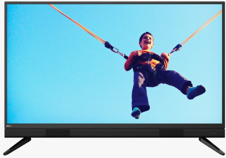
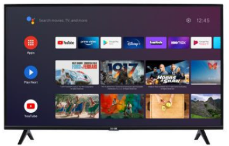

Brand: SAMSUNG
Screensize(inch): 32
Screen Technology:OLED
Cost: RM 5123

Brand: PHILIPS
Screensize(inch): LED
Screen Technology: 32
Cost: RM 3712

Brand: ARK
Screensize(inch): 40
Screen Technology:LED
Cost: RM 2967